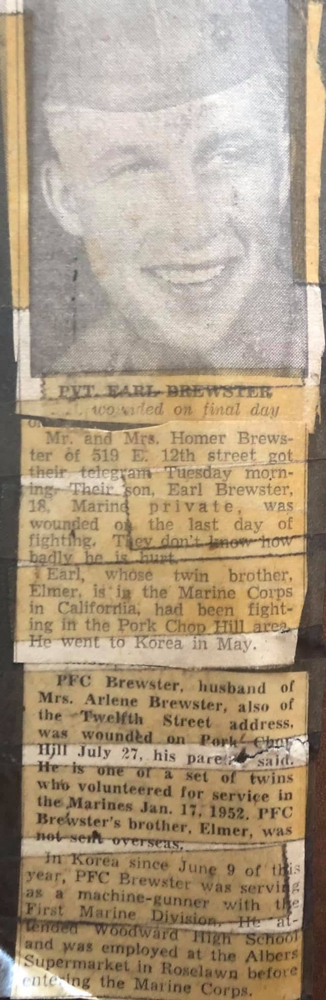
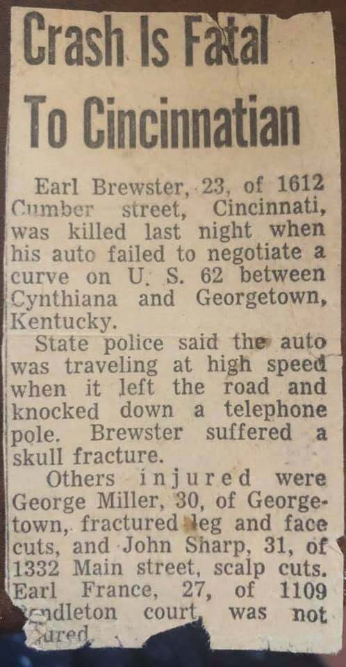
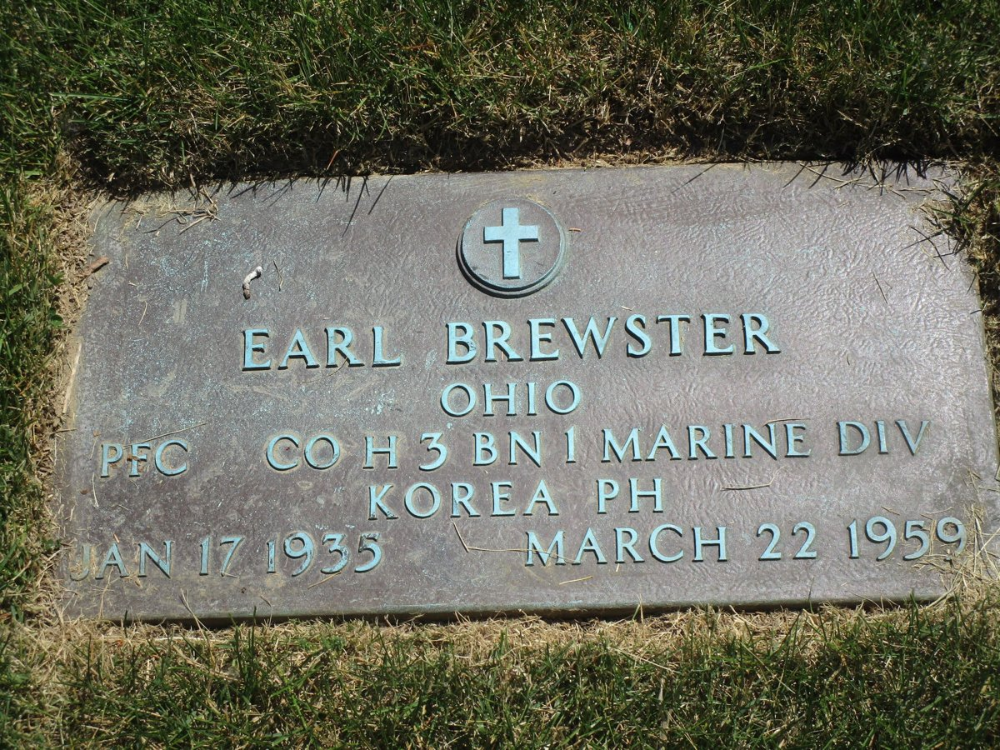

Brewster line · Homer Jr.'s brother, Elmer's twin · Tennessee, Cincinnati and Korea
Also known as: PFC Earl Brewster, USMC; "(Twin) Earl Brewster" on Geni
Profile status: DOCUMENTED name, birth, parents, military service, death and burial are proved; the father of two of his children is not yet proved
PFC Earl Brewster, USMC, 1953 (newspaper portrait, family collection)
Quick Facts
Born
17 January 1935 DOCUMENTED Tennessee DOCUMENTED; probably Morgan County, where the family lived in 1935–40 SUPPORTED
Parents
Homer William Brewster Sr. (1911–1991) DOCUMENTED Sarah Hazel Kelly (1912–1987) DOCUMENTED His Kentucky death record names his father as Homer Brewster and his mother as Sarah Kelly, and the 1950 census lists him as their son.
Twin
Elmer Ellis BrewsterDOCUMENTED; the 1953 newspaper calls them "a set of twins," and Elmer's obituary names "a twin brother, Earl"
Spouse
Arlene (Arline) Stone, married by July 1953, when a newspaper called her "Mrs. Arlene Brewster" DOCUMENTED Her maiden name, Stone, is SUPPORTED: their daughter Cheryl's 2015 obituary calls her "Arline Stone Gayhart," and Geni agrees. After Earl's death she married Wilkie Gayhart and became Arline Gayhart SUPPORTED (a 2025 obituary of their daughter). The 1953 newspaper spells her name Arlene; later records spell it Arline. She is living; see her profile. No marriage record has been found.
Cheryl Ann Brewster Horne (2 Oct 1956 – 23 May 2015) DOCUMENTED
Maureen Fields SUPPORTED
Carolyn Coomes UNPROVED
Adele Bowen UNPROVED
Earl Jr. is known personally to the family, and Cheryl's 2015 obituary names "a brother, Earl Brewster." Cheryl's obituary says she was born in Cincinnati "to Arline Stone Gayhart and the late Earl Brewster." The same obituary names Maureen, Carolyn and Adele as her sisters, but it also names a half-sister born after Earl died, so it does not prove their father. Maureen's birth falls in Earl's lifetime or just after, which supports him as her father. For Carolyn no record yet names her father. Rick ruled on 7 November 2026 that Maureen and Adele are definitely Earl’s daughters, full sisters of Earl Jr. and Cheryl. The living children are shown by name only.
Military
U.S. Marine Corps, enlisted 17 January 1952 with his twin Elmer DOCUMENTED; PFC, Company H, 3rd Battalion, 1st Marine Division, machine-gunner, Korea from June 1953 DOCUMENTED; regiment probably the 1st Marines (H/3/1) SUPPORTED Wounded 27 July 1953, the last day of the war; Purple Heart DOCUMENTED The family was told he was hit on Pork Chop Hill UNPROVED. That hill was in the U.S. Army's sector and was given up on 11 July 1953; the Marines' last fight, 24–27 July, was at Boulder City (Hill 119) and Hill 111.
Work
Before the Marines: Albers Supermarket, Roselawn, Cincinnati DOCUMENTED. In 1959: printer DOCUMENTED
Residence
Morgan County, Tennessee, 1940 SUPPORTED; 517 12th Street, Cincinnati, 1950 DOCUMENTED; 519 E. 12th Street, Cincinnati, 1953 DOCUMENTED; 1612 Cumber Street, Cincinnati, 1959 DOCUMENTED
Died
22 March 1959, aged 24, on the Leesburg Pike (U.S. 62) in Harrison County, Kentucky, between Cynthiana and Georgetown; his car failed to take a curve, and he died of a skull fracture DOCUMENTED His grave marker, the Kentucky death index and his Find a Grave memorial agree on the date. The newspaper gave his age as 23; he had turned 24 two months earlier.
Buried
Spring Grove Cemetery, Cincinnati, Section 139, Lot E, Space 43, under a bronze veteran's marker DOCUMENTED His parents lie in Section 134 of the same cemetery.
Immediate Family
Parents
Homer William Brewster Sr. (1911–1991) DOCUMENTED Sarah Hazel Kelly (1912–1987) DOCUMENTED His Kentucky death record names his father as Homer Brewster and his mother as Sarah Kelly, and the 1950 census lists him as their son.
Spouse
Arlene (Arline) Stone, married by July 1953, when a newspaper called her "Mrs. Arlene Brewster" DOCUMENTED Her maiden name, Stone, is SUPPORTED: their daughter Cheryl's 2015 obituary calls her "Arline Stone Gayhart," and Geni agrees. After Earl's death she married Wilkie Gayhart and became Arline Gayhart SUPPORTED (a 2025 obituary of their daughter). The 1953 newspaper spells her name Arlene; later records spell it Arline. She is living; see her profile. No marriage record has been found.
Earl Jr. is known personally to the family, and Cheryl's 2015 obituary names "a brother, Earl Brewster." Cheryl's obituary says she was born in Cincinnati "to Arline Stone Gayhart and the late Earl Brewster." The same obituary names Maureen, Carolyn and Adele as her sisters, but it also names a half-sister born after Earl died, so it does not prove their father. Maureen's birth falls in Earl's lifetime or just after, which supports him as her father. For Carolyn and Adele no record yet names their father. The living children are shown by name only.
17 Jan 1935 · age 0 Born in Tennessee, a twin with ElmerDOCUMENTED (probably Morgan County SUPPORTED)
1940 · age 5 Living with his family in Morgan County, Tennessee SUPPORTED
1950 · age 15 Living with his family at 517 12th Street, Cincinnati, Ohio DOCUMENTED
Before 1952 Attended Woodward High School and worked at Albers Supermarket in Roselawn DOCUMENTED
17 Jan 1952 · age 17 Joined the U.S. Marine Corps on his 17th birthday with his twin Elmer DOCUMENTED
By Jul 1953 · age 18 Married to Arlene, who was living with his parents at 519 E. 12th Street DOCUMENTED
May–Jun 1953 · age 18 Sent to Korea; in Korea from 9 June as a machine-gunner with the 1st Marine Division DOCUMENTED
27 Jul 1953 · age 18 Wounded on the last day of the Korean War; Purple Heart DOCUMENTED. The family was told Pork Chop Hill UNPROVED; the Marines' last fight was at Boulder City and Hill 111
1956 Daughter Cheryl Ann born in Cincinnati DOCUMENTED
By 1959 Working as a printer; living at 1612 Cumber Street, Cincinnati DOCUMENTED
22 Mar 1959 · age 24 Killed when his car left a curve on U.S. 62 in Harrison County, Kentucky DOCUMENTED
1959 Buried at Spring Grove Cemetery, Cincinnati, Section 139 DOCUMENTED
Life Story
Earl Brewster and his twin brother Elmer were born on January 17, 1935, in Tennessee, sons of Homer William Brewster Sr. and Sarah Hazel Kelly. DOCUMENTED The family was living in Morgan County in 1940, and by 1950 they had moved north to Cincinnati, where Earl grew up on 12th Street, went to Woodward High School and worked at the Albers Supermarket in Roselawn. DOCUMENTED
On their seventeenth birthday, January 17, 1952, Earl and Elmer volunteered for the Marine Corps together. DOCUMENTED Elmer stayed in California, but Earl went to Korea in the spring of 1953 as a machine-gunner with Company H, 3rd Battalion, 1st Marine Division. DOCUMENTED On July 27, 1953, the very last day of the war, he was wounded and later received the Purple Heart. DOCUMENTED His parents heard by telegram; they told the newspaper it happened on Pork Chop Hill UNPROVED, but the Marines' last battle was fought at Boulder City and Hill 111, and his company was most likely How Company of the 1st Marines. SUPPORTED He was eighteen, and already married to Arlene. DOCUMENTED
Back in Cincinnati, Earl and Arlene raised a young family, and he worked as a printer. DOCUMENTED On the night of March 22, 1959, his car failed to take a curve on U.S. 62 between Cynthiana and Georgetown, Kentucky, and he was killed. He was twenty-four. DOCUMENTED He was buried at Spring Grove Cemetery in Cincinnati under a bronze veteran's marker that records his company, his service in Korea and his Purple Heart. DOCUMENTED
Photo Gallery
PFC Earl Brewster, USMC, 1953. Newspaper portrait, family collection (paper not named)

"Pvt. Earl Brewster wounded on final day," Cincinnati newspaper, about 28–31 July 1953. Family collection

"Crash Is Fatal To Cincinnatian," March 1959. Family collection, shared on Geni

Grave marker, Spring Grove Cemetery. Photo by HCGS Ohio, 31 May 2023, Find a Grave
Sources and Evidence
Grave marker, Spring Grove Cemetery: "EARL BREWSTER / OHIO / PFC CO H 3 BN 1 MARINE DIV / KOREA PH / JAN 17 1935 MARCH 22 1959" (photo by HCGS Ohio, 2023, and a family photo) DOCUMENTED
Find a Grave, memorial 78897545: 17 Jan 1935 – 22 Mar 1959; Spring Grove Cemetery, Section 139, Lot E, Space 43 DOCUMENTED
Kentucky Deaths, 1911–1967, Earl Brewster: age 24, born Tennessee, died 1959 on the Leesburg Pike, Harrison County; printer; burial Cincinnati; father Homer Brewster, mother Sarah Kelly (FamilySearch index; certificate image not viewed) DOCUMENTED
Kentucky Death Index, 1911–2000, Earl Brewster: died 22 March 1959, Harrison County, Kentucky DOCUMENTED
1950 U.S. census, 517 12th Street, Cincinnati: Earl, 15, son, born Tennessee, with Homer, Sarah, Eugene, his twin Elmer, Aleene and Homer Jr. DOCUMENTED
1940 U.S. census, Morgan County, Tennessee (FamilySearch K4ZX-8KM): Earl, 5, with his family (as summarized; image not re-read) SUPPORTED
Newspaper article, "Pvt. Earl Brewster wounded on final day," about 28–31 July 1953 (paper not named; family collection): his enlistment with Elmer on 17 January 1952, Korea from 9 June, machine-gunner with the First Marine Division, wounded 27 July, wife Mrs. Arlene Brewster, Woodward High School, Albers Supermarket DOCUMENTED
Newspaper article, "Crash Is Fatal To Cincinnatian," March 1959 (paper not named; family collection): killed on U.S. 62 between Cynthiana and Georgetown, Kentucky; of 1612 Cumber Street; gives his age as 23 DOCUMENTED
Obituary of Cheryl Ann Brewster Horne, died 23 May 2015, Lincolnton, North Carolina, Warlick Funeral Home: born 2 October 1956 in Cincinnati "to Arline Stone Gayhart and the late Earl Brewster"; names her brother Earl Brewster and sisters Carolyn Coomes, Adele Bowen, Maureen Fields and Kristy Duckett. (The heading misprints her birth year as 1946; the text gives 1956 and her age as 58.) DOCUMENTED
Obituary of Kristy Ann (Gayhart) Duckett, died 18 December 2025, Hodapp Funeral Homes: born 25 December 1961 to Wilkie and Arline Gayhart; names her late sister Cheryl Horne and siblings Earl Brewster, Carolyn Coomes, Adele Bowen and Maureen Fields DOCUMENTED
Family account: Earl Brewster Jr. is known personally to the family as Earl's son FAMILY ACCOUNT
Homer Sr. × Sarah profile Doc and family research notes (family collection) FAMILY ACCOUNT
Geni, read 2026-11-06: Earl Brewster profile and his wife's and children's profiles (tree lead only) UNPROVED
Grades: DOCUMENTED an original record says it · SUPPORTED several records point to it · FAMILY ACCOUNT the family's own telling · UNPROVED a lead, not proved.
Research Notes and Open Questions
Children: Geni lists Cheryl Ann Horne with a birth date of 2 October 1946, when Earl was eleven. That year is a misprint copied from the heading of her obituary; the obituary text gives 1956 and her age as 58, so she was born during Earl's marriage DOCUMENTED.
Kristy Duckett, Arline's daughter, is not Earl's child: she was born on 25 December 1961, after his death, to Wilkie and Arline Gayhart DOCUMENTED. Geni shows Earl as her stepfather, which cannot be right.
Carolyn Coomes and Adele Bowen are named as sisters of Earl's daughter Cheryl, but no record yet names their father UNPROVED. Ohio birth records (Ohio Department of Health, from 1908) for each child, or Arline's own obituary in time, would settle which children were Earl's.
Earl's Kentucky death certificate (Harrison County, 1959) should name the informant and his wife. The Cincinnati Enquirer or Post death notice, about 23–26 March 1959, may name his wife and children.
No marriage record for Earl and Arlene has been found. Try Hamilton County, Ohio, and Campbell or Kenton County, Kentucky, about 1952–53.
Regiment: the grave marker gives "CO H 3 BN 1 MARINE DIV" without the regiment. How Company, 3rd Battalion, 1st Marines (H/3/1) fought at Hill 111 on 24–27 July 1953, so H/3/1 is likely; H/3/7 is not ruled out. His service record and casualty card from the National Personnel Records Center would settle it.
"Pork Chop Hill" comes from his parents' account to the newspaper. Pork Chop Hill was held by the U.S. Army 7th Infantry Division and was given up on 11 July 1953, so it is unlikely to be where a Marine was wounded on 27 July.
The 1959 newspaper gave his age as 23; he was 24. The newspaper name and date of both clippings are not shown on them.
Birthplace: the Kentucky death index and the 1950 census give Tennessee. His twin's Social Security application gives Brewstertown, Tennessee, which is probably his birthplace too, but this is not yet proved for Earl.
Geni carries "(Twin)" in Earl's name; it is shown here as a note, not part of his name.
DNA
No DNA matches linked yet.
Profile history: Updated 7 November 2026: his children linked to their profile Docs; Maureen and Adele ruled his daughters. Updated 6 November 2026 with his death record, grave marker and burial, his Marine service and Korea wound, his marriage, his children, both newspaper articles, a portrait and a full life story.